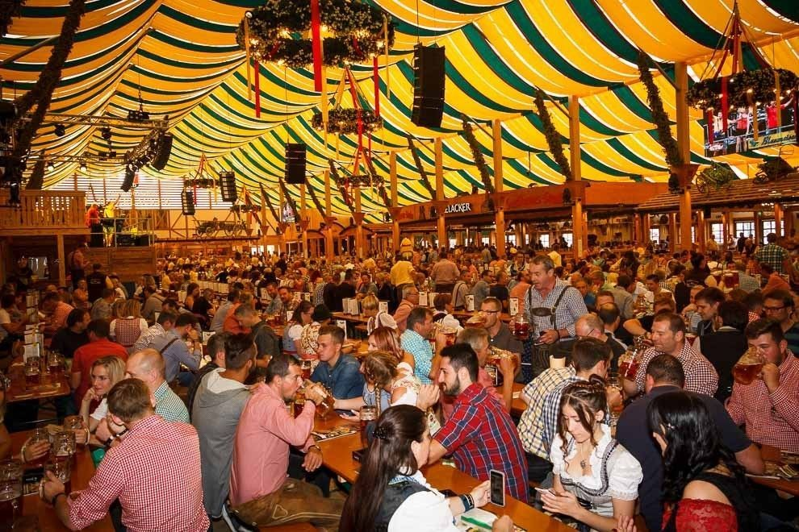

Festividade
Nesta página será abordado as Festividades mais famosas da Alemanha:
Oktoberfest
A Oktoberfest é a maior festa folclórica de todo o mundo. Apesar do nome (oktober é uma palavra alemã que significa outubro), a festa começa em setembro e termina no mês seguinte, durando cerca de duas semanas todos os anos. A sua celebração começou no ano de 1810, como forma de comemorar o casamento do príncipe Ludwig da Baviera com a sua esposa, Teresa.
Desde então, todos os anos, os nativos e turistas são convidados a se unir e provar as delícias da culinária alemã, tomar muita cerveja, se divertir com suas famílias e entes queridos em um evento super organizado e bastante seguro.
Grösste kirmes am rhein

A Bavária é uma região bem conhecida por suas festas, mas em Düsseldorf, as celebrações ganham outro nível. A Grösste kirmes am rhein é uma enorme quermesse junto ao Rio Reno que atrai, nada menos, que 4 milhões de pessoas todos os anos. São dez dias que começam na terceira semana de julho, oferecendo diversão para a família inteira, como montanha russa, roda gigante e splash.
Cannstatter Wasen
Assim como a Oktoberfest de Munique, Stuttgart tem a Cannstatter Wasen, no final de setembro e início de outubro. Com duração de duas semanas, acontece após a concorrente e a Festa do Vinho, também em Stuttgart. Na festa, os visitantes curtem atrações diversas, além de tendas que servem comidas típicas, cerveja e vinho. Ah, e claro, muita gente vestida com roupas tradicionais alemãs.
Clique aqui para voltar ao Menu Principal